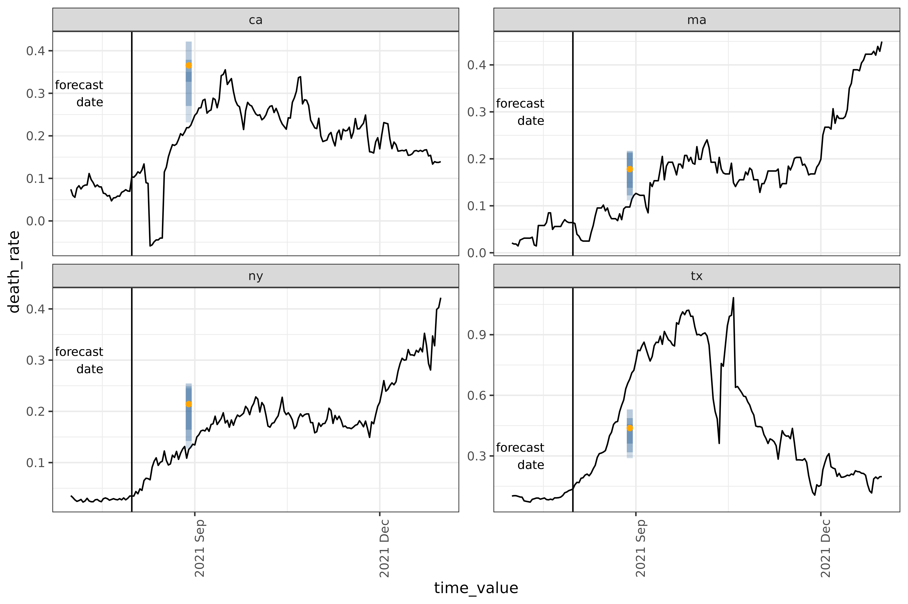

If you want to do custom data preprocessing or fit a model that isn’t
included in the canned workflows, you’ll need to write a custom
epi_workflow(). An epi_workflow() is a
sub-class of a workflows::workflow() from the
workflows package designed to handle panel data
specifically.
To understand how to work with custom epi_workflow()s,
let’s recreate and then modify the four_week_ahead example
from the landing page.
Let’s first remind ourselves how to use a simple canned workflow:
training_data <- covid_case_death_rates |>
filter(time_value <= forecast_date, geo_value %in% used_locations)
four_week_ahead <- arx_forecaster(
training_data,
outcome = "death_rate",
predictors = c("case_rate", "death_rate"),
args_list = arx_args_list(
lags = list(c(0, 1, 2, 3, 7, 14), c(0, 7, 14)),
ahead = 4 * 7,
quantile_levels = c(0.1, 0.25, 0.5, 0.75, 0.9)
)
)
four_week_ahead$epi_workflow
#>
#> ══ Epi Workflow [trained] ═══════════════════════════════════════════════════
#> Preprocessor: Recipe
#> Model: linear_reg()
#> Postprocessor: Frosting
#>
#> ── Preprocessor ─────────────────────────────────────────────────────────────
#>
#> 7 Recipe steps.
#> 1. step_epi_lag()
#> 2. step_epi_lag()
#> 3. step_epi_ahead()
#> 4. step_naomit()
#> 5. step_naomit()
#> 6. step_training_window()
#> 7. check_enough_data()
#>
#> ── Model ────────────────────────────────────────────────────────────────────
#>
#> Call:
#> stats::lm(formula = ..y ~ ., data = data)
#>
#> Coefficients:
#> (Intercept) lag_0_case_rate lag_1_case_rate lag_2_case_rate
#> -0.0060191 0.0004648 0.0021793 0.0004928
#> lag_3_case_rate lag_7_case_rate lag_14_case_rate lag_0_death_rate
#> 0.0007806 -0.0021676 0.0018002 0.4258788
#> lag_7_death_rate lag_14_death_rate
#> 0.1632748 -0.1584456
#>
#> ── Postprocessor ────────────────────────────────────────────────────────────
#>
#> 5 Frosting layers.
#> 1. layer_predict()
#> 2. layer_residual_quantiles()
#> 3. layer_add_forecast_date()
#> 4. layer_add_target_date()
#> 5. layer_threshold()
#> Anatomy of an epi_workflow
An epi_workflow() is an extension of a
workflows::workflow() that is specially designed to handle
panel data, and to apply custom post-processing steps to the output of a
model. All epi_workflows, including simple and canned
workflows, consist of 3 components, a preprocessor, trainer, and
postprocessor.
Preprocessor
A preprocessor (in the context of epipredict this means a
{recipe}) transforms the data before model training and
prediction. Transformations can include converting counts to rates,
applying a running average to columns, or any of the
steps found in {recipes}.
All workflows must include a preprocessor. The most basic preprocessor just assigns roles to columns, telling the model in the next step which to use as predictors or the outcome.
However, preprocessors can do much more. You can think of a
preprocessor as a more flexible formula that you would pass
to lm(): y ~ x1 + log(x2) + lag(x1, 5). The
simple model above internally runs 6 of these steps, such as creating
lagged predictor columns.
In general, there are 2 broad classes of transformation that
recipes steps handle:
- Operations that are applied to both training and test data without using stored information. Examples include taking the log of a variable, leading or lagging columns, filtering out rows, handling dummy variables, calculating growth rates, etc.
- Operations that rely on stored information (parameters estimated during training) to modify both train and test data. Examples include centering by the mean, and normalizing the variance to be one (whitening).
We differentiate between these types of transformations because the second type can result in information leakage if not done properly. Information leakage or data leakage happens when a system has access to information that would not have been available at prediction time and could change our evaluation of the model’s real-world performance.
In the case of centering, we need to store the mean of the predictor from the training data and use that value on the prediction data, rather than using the mean of the test predictor for centering or including test data in the mean calculation.
A major benefit of recipes is that it prevents information leakage. However, the main mechanism we rely on to prevent data leakage in the context of epidemiological forecasting is proper backtesting.
Trainer
A trainer (aso called a model or engine) fits a
parsnip model to training data, and outputs a fitted
model object. Examples include linear regression, quantile regression,
or any
{parsnip} engine. The parsnip front-end
abstracts away the differences in interface between a wide collection of
statistical models.
All workflows must include a model.
Postprocessor
Generally a postprocessor modifies and formats the prediction after a
model has been fit. An epipredict postprocessor is called
a frosting(); there are alternatives such as tailor which performs
calibration.
The postprocessor is optional. It only needs to be included in a workflow if you need to process the model output.
Each operation within a postprocessor is called a “layer” (functions
are named layer_*), and the stack of layers is known as
frosting(), continuing the metaphor of baking a cake
established in recipes. Some example operations
include:
- generating quantiles from purely point-prediction models
- reverting transformations done in prior steps, such as converting from rates back to counts
- thresholding forecasts to remove negative values
- generally adapting the format of the prediction to a downstream use.
Recreating four_week_ahead in an
epi_workflow()
To understand how to create custom workflows, let’s first recreate
the simple canned arx_forecaster() from scratch.
We’ll think through the following sub-steps:
- Define the
epi_recipe(), which contains the preprocessing steps - Define the
frosting()which contains the post-processing layers - Combine these with a trainer such as
quantile_reg()into anepi_workflow(), which we can then fit on the training data -
fit()the workflow on some data - Grab the right prediction data using
get_test_data()and apply the fit data to generate a prediction
Define the epi_recipe()
The steps found in four_week_ahead look like:
hardhat::extract_recipe(four_week_ahead$epi_workflow)
#>
#> ── Epi Recipe ───────────────────────────────────────────────────────────────
#>
#> ── Inputs
#> Number of variables by role
#> raw: 2
#> geo_value: 1
#> time_value: 1
#>
#> ── Training information
#> Training data contained 856 data points and no incomplete rows.
#>
#> ── Operations
#> 1. Lagging: case_rate by 0, 1, 2, 3, 7, 14 | Trained
#> 2. Lagging: death_rate by 0, 7, 14 | Trained
#> 3. Leading: death_rate by 28 | Trained
#> 4. • Removing rows with NA values in: lag_0_case_rate, ... | Trained
#> 5. • Removing rows with NA values in: ahead_28_death_rate | Trained
#> 6. • # of recent observations per key limited to:: Inf | Trained
#> 7. • Check enough data (n = 1) for: lag_0_case_rate, ... | TrainedThere are 6 steps we will need to recreate. Note that all steps in
the extracted recipe are marked as already having been
Trained. For steps such as
recipes::step_BoxCox() that have parameters that change
their behavior, this means that their parameters have already been
calculated based on the training data set.
Let’s create an epi_recipe() to hold the 6 steps:
filtered_data <- covid_case_death_rates |>
filter(time_value <= forecast_date, geo_value %in% used_locations)
four_week_recipe <- epi_recipe(
filtered_data,
reference_date = (filtered_data %@% metadata)$as_of
)The data set passed to epi_recipe isn’t required to be
the actual data set on which you are going to train the model. However,
it should have the same columns and the same metadata (such as
as_of and other_keys); it is typically easiest
just to use the training data itself.
This means that you can use the same workflow for multiple data sets as long as the format remains the same. This might be useful if you continue to get updates to a data set over time and you want to train a new instance of the same model.
Then we can append each step using pipes. In principle,
the order matters, though for this recipe only
step_epi_naomit() and step_training_window()
depend on the steps before them. The other steps can be thought of as
setting parameters that help specify later processing and
computation.
four_week_recipe <- four_week_recipe |>
step_epi_lag(case_rate, lag = c(0, 1, 2, 3, 7, 14)) |>
step_epi_lag(death_rate, lag = c(0, 7, 14)) |>
step_epi_ahead(death_rate, ahead = 4 * 7) |>
step_epi_naomit() |>
step_training_window()Note we said before that four_week_ahead contained 6
steps. We’ve only added 5 top-level steps here because
step_epi_naomit() is actually a wrapper around adding two
step_naomit()s, one for all_predictors() and
one for all_outcomes(). The step_naomit()s
differ in their treatment of the data at predict time.
step_epi_lag() and step_epi_ahead() both
accept “tidy”
syntax so processing can be applied to multiple columns at once. For
example, if we wanted to use the same lags for both
case_rate and death_rate, we could specify
them in a single step, like
step_epi_lag(ends_with("rate"), lag = c(0, 7, 14)).
In general, recipes steps assign roles
(such as predictor, or outcome, see the Roles vignette
for details) to columns either by adding new columns or adjusting
existing ones. step_epi_lag(), for example, creates a new
column for each lag with the name lag_x_column_name and
labels them each with the predictor role.
step_epi_ahead() creates ahead_x_column_name
columns and labels each with the outcome role.
In general, to inspect the ‘prepared’ steps, we can run
prep(), which fits any parameters used in the recipe,
calculates new columns, and assigns roles1. For example, we can
use prep() to make sure that we are training on the correct
columns:
prepped <- four_week_recipe |> prep(training_data)
prepped$term_info |> print(n = 14)
#> # A tibble: 14 × 4
#> variable type role source
#> <chr> <chr> <chr> <chr>
#> 1 geo_value nominal geo_value original
#> 2 time_value date time_value original
#> 3 case_rate numeric raw original
#> 4 death_rate numeric raw original
#> 5 lag_0_case_rate numeric predictor derived
#> 6 lag_1_case_rate numeric predictor derived
#> 7 lag_2_case_rate numeric predictor derived
#> 8 lag_3_case_rate numeric predictor derived
#> 9 lag_7_case_rate numeric predictor derived
#> 10 lag_14_case_rate numeric predictor derived
#> 11 lag_0_death_rate numeric predictor derived
#> 12 lag_7_death_rate numeric predictor derived
#> 13 lag_14_death_rate numeric predictor derived
#> 14 ahead_28_death_rate numeric outcome derivedbake() applies a prepared recipe to a (potentially new)
dataset to create the dataset as handed to the
epi_workflow(). We can inspect newly-created columns by
running bake() on the recipe so far:
four_week_recipe |>
prep(training_data) |>
bake(training_data)
#> An `epi_df` object, 800 x 14 with metadata:
#> * geo_type = state
#> * time_type = day
#> * as_of = 2023-03-10
#>
#> # A tibble: 800 × 14
#> geo_value time_value case_rate death_rate lag_0_case_rate lag_1_case_rate
#> * <chr> <date> <dbl> <dbl> <dbl> <dbl>
#> 1 ca 2021-01-14 108. 1.22 108. 111.
#> 2 ma 2021-01-14 88.7 0.893 88.7 92.0
#> 3 ny 2021-01-14 82.4 0.969 82.4 84.9
#> 4 tx 2021-01-14 74.9 1.05 74.9 75.0
#> 5 ca 2021-01-15 104. 1.21 104. 108.
#> 6 ma 2021-01-15 83.3 0.908 83.3 88.7
#> # ℹ 794 more rows
#> # ℹ 8 more variables: lag_2_case_rate <dbl>, lag_3_case_rate <dbl>, …This is also useful for debugging malfunctioning pipelines. You can
run prep() and bake() on a new recipe
containing a subset of steps – all steps from
the beginning up to the one that is misbehaving – from the full,
original recipe. This will return an evaluation of the
recipe up to that point so that you can see the data that
the misbehaving step is being applied to. It also allows
you to see the exact data that a later parsnip model is
trained on.
Define the frosting()
The post-processing frosting layers2 found in
four_week_ahead look like:
epipredict::extract_frosting(four_week_ahead$epi_workflow)
#>
#> ── Frosting ─────────────────────────────────────────────────────────────────
#>
#> ── Layers
#> 1. Creating predictions: "<calculated>"
#> 2. Resampling residuals for predictive quantiles: "<calculated>"
#> 3. quantile_levels 0.1, 0.25, 0.5, 0.75, 0.9
#> 4. Adding forecast date: "2021-08-01"
#> 5. Adding target date: "2021-08-29"
#> 6. Thresholding predictions: dplyr::starts_with(".pred") to [0, Inf)Note: since frosting is unique to this package,
we’ve defined a custom function extract_frosting() to
inspect these steps.
Using the detailed information in the output above, we can recreate
the layers similar to how we defined the recipe
steps3:
four_week_layers <- frosting() |>
layer_predict() |>
layer_residual_quantiles(quantile_levels = c(0.1, 0.25, 0.5, 0.75, 0.9)) |>
layer_add_forecast_date() |>
layer_add_target_date() |>
layer_threshold()layer_predict() needs to be included in every
postprocessor to actually predict on the prediction data.
Most layers work with any engine or steps. There are a
couple of layers, however, that depend on whether the engine predicts
quantiles or point estimates.
The following layers are only supported by point estimate engines,
such as linear_reg():
-
layer_residual_quantiles(): for models that don’t generate quantiles, the preferred method of generating quantiles. This function uses the error residuals of the engine to calculate quantiles. This will work for most parsnip engines. -
layer_predictive_distn(): alternate method of generating quantiles using an approximate parametric distribution. This will work for linear regression specifically.
On the other hand, the following layers are only supported by engines
that output quantiles, such as quantile_reg():
-
layer_quantile_distn(): adds the specified quantiles. If the user-requested quantile levels differ from the ones actually fit, they will be interpolated and/or extrapolated. -
layer_point_from_distn(): this generates a point estimate from a distribution (either median or mean), and, if used, should be included afterlayer_quantile_distn().
Fitting an epi_workflow()
Now that we have a recipe and some layers, we can assemble the
workflow. This is as simple as passing the component preprocessor,
model, and postprocessor into epi_workflow().
four_week_workflow <- epi_workflow(
four_week_recipe,
linear_reg(),
four_week_layers
)After fitting it, we will have recreated
four_week_ahead$epi_workflow.
fit_workflow <- four_week_workflow |> fit(training_data)Running fit() calculates all preprocessor-required
parameters, and trains the model on the data passed in
fit(). However, it does not generate any predictions;
predictions need to be created in a separate step.
Predicting
To make a prediction, it helps to narrow the data set down to the
relevant observations using get_test_data(). We can still
generate predictions without doing this first, but it will predict on
every day in the data-set, and not just on the
reference_date.
relevant_data <- get_test_data(
four_week_recipe,
training_data
)In this example, we’re creating relevant_data from
training_data, but the data set we want predictions for
could be entirely new data, unrelated to the one we used when building
the workflow.
With a trained workflow and data in hand, we can actually make our predictions:
fit_workflow |> predict(relevant_data)
#> An `epi_df` object, 4 x 6 with metadata:
#> * geo_type = state
#> * time_type = day
#> * as_of = 2023-03-10
#>
#> # A tibble: 4 × 6
#> geo_value time_value .pred .pred_distn forecast_date target_date
#> <chr> <date> <dbl> <qtls(5)> <date> <date>
#> 1 ca 2021-08-01 0.341 [0.341] 2021-08-01 2021-08-29
#> 2 ma 2021-08-01 0.163 [0.163] 2021-08-01 2021-08-29
#> 3 ny 2021-08-01 0.196 [0.196] 2021-08-01 2021-08-29
#> 4 tx 2021-08-01 0.404 [0.404] 2021-08-01 2021-08-29Note that if we simply plug the full training_data into
predict() we will still get predictions:
fit_workflow |> predict(training_data)
#> An `epi_df` object, 800 x 6 with metadata:
#> * geo_type = state
#> * time_type = day
#> * as_of = 2023-03-10
#>
#> # A tibble: 800 × 6
#> geo_value time_value .pred .pred_distn forecast_date target_date
#> <chr> <date> <dbl> <qtls(5)> <date> <date>
#> 1 ca 2021-01-14 0.997 [0.997] 2021-08-01 2021-08-29
#> 2 ma 2021-01-14 0.835 [0.835] 2021-08-01 2021-08-29
#> 3 ny 2021-01-14 0.868 [0.868] 2021-08-01 2021-08-29
#> 4 tx 2021-01-14 0.581 [0.581] 2021-08-01 2021-08-29
#> 5 ca 2021-01-15 0.869 [0.869] 2021-08-01 2021-08-29
#> 6 ma 2021-01-15 0.830 [0.83] 2021-08-01 2021-08-29
#> # ℹ 794 more rowsThe resulting tibble is 800 rows long, however. Passing the
non-subsetted data set produces forecasts for not just the requested
reference_date, but for every day in the data set that has
sufficient data to produce a prediction. To narrow this down, we could
filter to rows where the time_value matches the
forecast_date:
fit_workflow |>
predict(training_data) |>
filter(time_value == forecast_date)
#> An `epi_df` object, 4 x 6 with metadata:
#> * geo_type = state
#> * time_type = day
#> * as_of = 2023-03-10
#>
#> # A tibble: 4 × 6
#> geo_value time_value .pred .pred_distn forecast_date target_date
#> <chr> <date> <dbl> <qtls(5)> <date> <date>
#> 1 ca 2021-08-01 0.341 [0.341] 2021-08-01 2021-08-29
#> 2 ma 2021-08-01 0.163 [0.163] 2021-08-01 2021-08-29
#> 3 ny 2021-08-01 0.196 [0.196] 2021-08-01 2021-08-29
#> 4 tx 2021-08-01 0.404 [0.404] 2021-08-01 2021-08-29This can be useful as a workaround when get_test_data()
fails to pull enough data to produce a forecast. This is generally a
problem when the recipe (preprocessor) is sufficiently complicated, and
get_test_data() can’t determine precisely what data is
required. The forecasts generated with filter and
get_test_data are identical.
Extending four_week_ahead
Now that we know how to create four_week_ahead from
scratch, we can start modifying the workflow to get custom behavior.
There are many ways we could modify four_week_ahead. We
might consider:
- Converting from rates to counts
- Including a growth rate estimate as a predictor
- Including a time component as a predictor — useful if we expect there to be a strong seasonal component to the outcome
- Scaling by a factor
We will demonstrate a couple of these modifications below.
Growth rate
Let’s say we’re interested in including growth rate as a predictor in
our model because we think it may potentially improve our forecast. We
can easily create a new growth rate column as a step in the
epi_recipe.
growth_rate_recipe <- epi_recipe(
covid_case_death_rates |>
filter(time_value <= forecast_date, geo_value %in% used_locations)
) |>
# Calculate growth rate from death rate column.
step_growth_rate(death_rate) |>
step_epi_lag(case_rate, lag = c(0, 1, 2, 3, 7, 14)) |>
step_epi_lag(death_rate, lag = c(0, 7, 14)) |>
step_epi_ahead(death_rate, ahead = 4 * 7) |>
step_epi_naomit() |>
step_training_window()Inspecting the newly added column:
growth_rate_recipe |>
prep(training_data) |>
bake(training_data) |>
select(
geo_value, time_value, case_rate,
death_rate, gr_7_rel_change_death_rate
) |>
arrange(geo_value, time_value) |>
tail()
#> An `epi_df` object, 6 x 5 with metadata:
#> * geo_type = state
#> * time_type = day
#> * as_of = 2023-03-10
#>
#> # A tibble: 6 × 5
#> geo_value time_value case_rate death_rate gr_7_rel_change_death_rate
#> <chr> <date> <dbl> <dbl> <dbl>
#> 1 tx 2021-07-27 19.8 0.104 0.00721
#> 2 tx 2021-07-28 23.6 0.118 0.0159
#> 3 tx 2021-07-29 23.4 0.122 0.0272
#> 4 tx 2021-07-30 27.6 0.128 0.0339
#> 5 tx 2021-07-31 30.7 0.132 0.0421
#> 6 tx 2021-08-01 30.7 0.136 0.0516And the role:
prepped <- growth_rate_recipe |>
prep(training_data)
prepped$term_info |> filter(grepl("gr", variable))
#> # A tibble: 1 × 4
#> variable type role source
#> <chr> <chr> <chr> <chr>
#> 1 gr_7_rel_change_death_rate numeric predictor derivedLet’s say we want to use quantile_reg() as the model.
Because quantile_reg() outputs quantiles only, we need to
change our frosting to convert a quantile distribution into
quantiles and point predictions. To do that, we need to switch out
layer_residual_quantiles() (used for converting point +
residuals output, e.g. from linear_reg() into quantiles)
for layer_quantile_distn() and
layer_point_from_distn():
growth_rate_layers <- frosting() |>
layer_predict() |>
layer_quantile_distn(
quantile_levels = c(0.1, 0.25, 0.5, 0.75, 0.9)
) |>
layer_point_from_distn() |>
layer_add_forecast_date() |>
layer_add_target_date() |>
layer_threshold()
growth_rate_workflow <- epi_workflow(
growth_rate_recipe,
quantile_reg(quantile_levels = c(0.1, 0.25, 0.5, 0.75, 0.9)),
growth_rate_layers
)
relevant_data <- get_test_data(
growth_rate_recipe,
training_data
)
gr_fit_workflow <- growth_rate_workflow |> fit(training_data)
gr_predictions <- gr_fit_workflow |>
predict(relevant_data) |>
filter(time_value == forecast_date)Plot
We’ll reuse some code from the landing page to plot the result.
forecast_date_label <-
tibble(
geo_value = rep(used_locations, 2),
.response_name = c(rep("case_rate", 4), rep("death_rate", 4)),
dates = rep(forecast_date - 7 * 2, 2 * length(used_locations)),
heights = c(rep(150, 4), rep(0.30, 4))
)
result_plot <- autoplot(
object = gr_fit_workflow,
predictions = gr_predictions,
observed_response = covid_case_death_rates |>
filter(geo_value %in% used_locations, time_value > "2021-07-01")
) +
geom_vline(aes(xintercept = forecast_date)) +
geom_text(
data = forecast_date_label |> filter(.response_name == "death_rate"),
aes(x = dates, label = "forecast\ndate", y = heights),
size = 3, hjust = "right"
) +
scale_x_date(date_breaks = "3 months", date_labels = "%Y %b") +
theme(axis.text.x = element_text(angle = 90, hjust = 1))
Population scaling
Suppose we want to modify our predictions to return a rate
prediction, rather than the count prediction. To do that, we can adjust
just the frosting to perform post-processing on
our existing rates forecaster. Since rates are calculated as counts per
100 000 people, we will convert back to counts by multiplying rates by
the factor
.
count_layers <-
frosting() |>
layer_predict() |>
layer_residual_quantiles(quantile_levels = c(0.1, 0.25, 0.5, 0.75, 0.9)) |>
layer_population_scaling(
starts_with(".pred"),
# `df` contains scaling values for all regions; in this case it is the state populations
df = epidatasets::state_census,
df_pop_col = "pop",
create_new = FALSE,
# `rate_rescaling` gives the denominator of the existing rate predictions
rate_rescaling = 1e5,
by = c("geo_value" = "abbr")
) |>
layer_add_forecast_date() |>
layer_add_target_date() |>
layer_threshold()
# building the new workflow
count_workflow <- epi_workflow(
four_week_recipe,
linear_reg(),
count_layers
)
count_pred_data <- get_test_data(four_week_recipe, training_data)
count_predictions <- count_workflow |>
fit(training_data) |>
predict(count_pred_data)
count_predictions
#> An `epi_df` object, 4 x 6 with metadata:
#> * geo_type = state
#> * time_type = day
#> * as_of = 2023-03-10
#>
#> # A tibble: 4 × 6
#> geo_value time_value .pred .pred_distn forecast_date target_date
#> <chr> <date> <dbl> <qtls(5)> <date> <date>
#> 1 ca 2021-08-01 135. [135] 2021-08-01 2021-08-29
#> 2 ma 2021-08-01 11.3 [11.3] 2021-08-01 2021-08-29
#> 3 ny 2021-08-01 38.2 [38.2] 2021-08-01 2021-08-29
#> 4 tx 2021-08-01 117. [117] 2021-08-01 2021-08-29note that we’ve used tidyselect::starts_with(".pred")
here, which will apply the function to both the .pred and
.pred_distn columns.
Custom classifier workflow
Let’s work through an example of a more complicated kind of pipeline
you can build using the epipredict framework. This is a
hotspot prediction model, which predicts whether case rates are
increasing (up), decreasing (down) or flat
(flat). The model comes from a paper by McDonald, Bien,
Green, Hu et al4, and roughly serves as an extension of
arx_classifier().
First, we need to add a factor version of geo_value, so
that it can be used as a feature.
training_data <-
covid_case_death_rates |>
filter(time_value <= forecast_date, geo_value %in% used_locations) |>
mutate(geo_value_factor = as.factor(geo_value))Then we put together the recipe, using a combination of base
{recipe} functions such as add_role() and
step_dummy(), and epipredict functions such
as step_growth_rate().
classifier_recipe <- epi_recipe(training_data) |>
# Label `time_value` as predictor and do no other processing
add_role(time_value, new_role = "predictor") |>
# Use one-hot encoding on `geo_value_factor` and label each resulting column as a predictor
step_dummy(geo_value_factor) |>
# Create and lag `case_rate` growth rate
step_growth_rate(case_rate, role = "none", prefix = "gr_") |>
step_epi_lag(starts_with("gr_"), lag = c(0, 7, 14)) |>
step_epi_ahead(starts_with("gr_"), ahead = 7) |>
# divide growth rate into 3 bins
step_cut(ahead_7_gr_7_rel_change_case_rate, breaks = c(-Inf, -0.2, 0.25, Inf) / 7) |>
# Drop unused columns based on role assignments. This is not strictly
# necessary, as columns with roles unused in the model will be ignored anyway.
step_rm(has_role("none"), has_role("raw")) |>
step_epi_naomit()This adds as predictors:
- time value as a continuous variable (via
add_role()) -
geo_valueas a set of indicator variables (viastep_dummy()and the previousas.factor()) - growth rate of case rate, both at prediction time (no lag), and lagged by one and two weeks
The outcome variable is created by composing several steps together.
step_epi_ahead() creates a column with the growth rate one
week into the future, and step_mutate() turns that column
into a factor with 3 possible values,
where
is the growth rate at location
and time
.
up means that the case_rate is has increased
by at least 25%, while down means it has decreased by at
least 20%.
Note that in both step_growth_rate() and
step_epi_ahead() we explicitly assign the role
none. This is because those columns are used as
intermediaries to create predictor and outcome columns. Afterwards,
step_rm() drops the temporary columns, along with the
original role = "raw" columns death_rate and
case_rate. Both geo_value_factor and
time_value are retained because their roles have been
reassigned.
To fit a 3-class classification model like this, we will need to use
a parsnip model that has
mode = "classification". The simplest example of a
parsnip classification-mode
model is multinomial_reg(). The needed layers are more or
less the same as the linear_reg() regression layers, with
the addition that we need to remove some NA values:
frost <- frosting() |>
layer_naomit(starts_with(".pred")) |>
layer_add_forecast_date() |>
layer_add_target_date()
wf <- epi_workflow(
classifier_recipe,
multinom_reg(),
frost
) |>
fit(training_data)
forecast(wf)
#> An `epi_df` object, 4 x 5 with metadata:
#> * geo_type = state
#> * time_type = day
#> * as_of = 2023-03-10
#>
#> # A tibble: 4 × 5
#> geo_value time_value .pred_class forecast_date target_date
#> <chr> <date> <fct> <date> <date>
#> 1 ca 2021-08-01 (0.0357, Inf] 2021-08-01 2021-08-08
#> 2 ma 2021-08-01 (0.0357, Inf] 2021-08-01 2021-08-08
#> 3 ny 2021-08-01 (0.0357, Inf] 2021-08-01 2021-08-08
#> 4 tx 2021-08-01 (0.0357, Inf] 2021-08-01 2021-08-08And comparing the result with the actual growth rates at that point in time,
growth_rates <- covid_case_death_rates |>
filter(geo_value %in% used_locations) |>
group_by(geo_value) |>
mutate(
# Multiply by 7 to estimate weekly equivalents
case_gr = growth_rate(x = time_value, y = case_rate) * 7
) |>
ungroup()
growth_rates |> filter(time_value == "2021-08-01") |> select(-death_rate)
#> An `epi_df` object, 4 x 4 with metadata:
#> * geo_type = state
#> * time_type = day
#> * as_of = 2023-03-10
#>
#> # A tibble: 4 × 4
#> geo_value time_value case_rate case_gr
#> <chr> <date> <dbl> <dbl>
#> 1 ca 2021-08-01 24.9 0.356
#> 2 ma 2021-08-01 9.53 0.484
#> 3 ny 2021-08-01 12.5 0.504
#> 4 tx 2021-08-01 30.7 0.619we see that they’re all significantly higher than 25% per week (36%-62%), which matches the classification model’s predictions.
See the tooling book for a more in-depth discussion of this example.